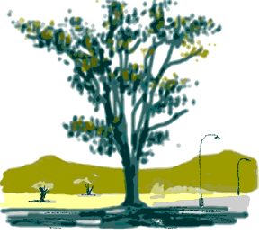

Peggy Hansen

Tucson's Largest Tree
"This is a fine example of Eucaliptus Rostrada. It measures 13 feet in circumference and has a diameter of four feet. It is growing in a very favorable location in a region of deep rich soil and its roots are undoubtedly down to permanent ground water. It is young and vigorous and it will be of great interest to see how large it will get."
-Peggy Hansen
© Peggy Hansen
"Tucson's Largest Tree"
Computer Graphics
Common Name: Eucalyptus
Latin Name: Eucaliptus Rostrada
Circumference: 13 feet
Location: Tucson, Arizona USA
 Return to Main Page
Return to Main Page
Comments
Please send e-mail to: June Julian jj68@nyu.edu